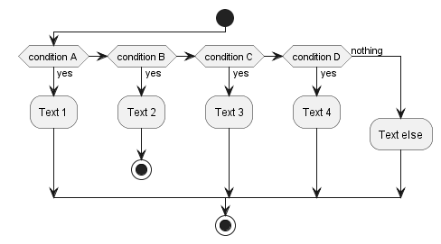

Instalación¶
Para instalar la librería se deben seguir los siguientes pasos:
Creación de Entorno Virtual:¶
Aunque la creación de un entorno virtual (Virtual Environment) no es obligatorio se recomienda hacerlo para evitar para mantener un mayor control sobre las versiones y los paquetes que se instalaran. El entorno virtual puede ser creado utilizando dos caminos:
Creación desde terminal:
Se debe ingresar al terminal y utilizar el siguiente comando:
python -m venv /path/to/new/virtualenvironment/venv.
Creación desde Anaconda Navigator:
Desde el navegador de Anaconda se puede ir a la sección de Enviroments donde se da la opciones de agregar un nuevo entorno de manera automática. Este es el acercamiento recomendado
Una vez creado el entrono virtual este debe ser activado utilizando el siguiente comando:
source venv/bin/activate
Instalación de la librería:¶
Desde el terminal y con el entorno virtual activado se debe correr el siguiente comando:
python setup.py install
Este comando instalara todas las librerías necesarias para el funcionamiento de la libreria, la ventaja de generar esta instalación dentro de un entorno virtual es que la instalación se vera limitada al entorno y no se generarán cambios sobre el entrono del sistema
Generación Kernel para utilización en Jupyter:¶
Para poder habilitar la utilización del entorno virtual en jupyter es necesario crear un nuevo kernel utilizando el siguiente comando:
ipython kernel install --user --name=<nombre>)
Debemos recordar que este comando debe ser ejecutado desde el entorno virtual que se desea copiar.
